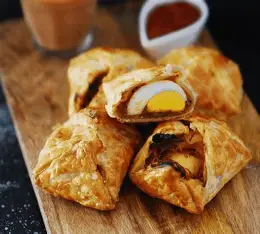

Oven-Fresh SavoriesPuffs & Savoury Pastries
பஃப் வகைகள்Flaky, multi-layered golden puff pastry baked to a delicate crisp, filled with aromatic spiced vegetable curry, seasoned egg, paneer, and mushrooms.
- Spiced Potato, Carrot & Pea Curry Puffs
- Seasoned Farm Egg with Caramelized Onions
- Seasoned Chicken Puffs
- Button Mushrooms with Tellicherry Black Pepper